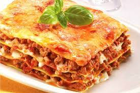

Lasanha de carne moida

Ingredientes
- 500gr de massa de Lasanha
- 300gr de carne moida
- 1 colher de óleo
- 2 dente de alho
- 200gr de queijo
- 100gr de presunto
COMO FAZER
- Em uma panela, coloque 1 fio de azeite e 1 quilo de carne moída. Frite até ficar soltinho.
- Em seguida, acrescente 2 cebolas picadas, 2 dentes de alho picados, 1 pimentão verde picado, 1 pimentão amarelo picado, 1 pimentão vermelho picado, 3 tomates picados em cubos e tempero verde a gosto. Refogue.
- Depois, adicione molho de tomate a gosto e sal a gosto. Misture e reserve.